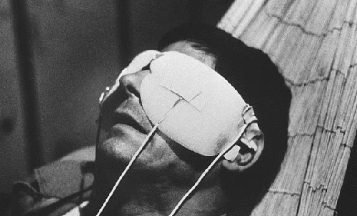
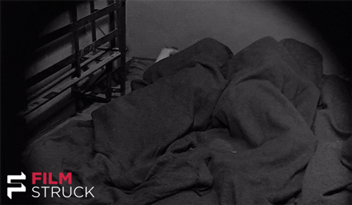
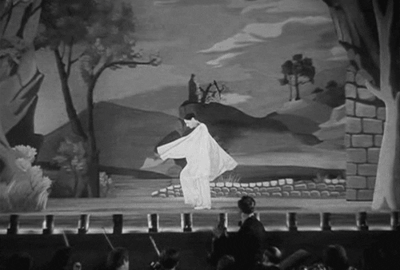
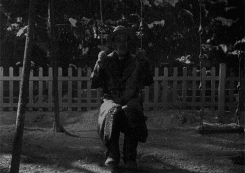
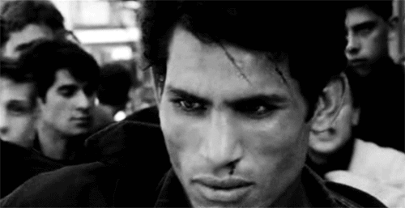

''A short film that is a reflection about time, happiness and love, entirely composed of static shots, "la jetée" is a powerful and mesmerizing work and it may appear as a cornerstone in French cinema. 42 years after its release, it kept all its strength and has not aged a bit. The quality of the editing, the photography and the commentary add to the success of Chris Marker's work.''
LE TROU

''Jacques Becker's swan song is a real gem of a film. Le Trou has such an amazing kinetic rhythm to it that one both feels and forgets the claustrophobic environs. Based on a real story turned into a novel by one of the "escapees", the film has excellent casting, wonderful (candel-lit!) cinematography and crisp dialog among its other advantages.''
CHILDREN OF PARADISE

''It's one of the best films ever made and one of my favourite films, although the first time I attempted to see it at 14 years old in 1973 I didn't understand it at all. I tried again four years older and it won me over. Personal tastes vary not only between people but within people over time. Nowadays I can't understand why some people can't understand it and get nothing from this timeless world classic - at the very least they could look upon it as the closest the French cinema ever got to Dickens.''
IKIRU

''Akira Kurosawa knew how to get in touch with human nature through his art. With his visual expressiveness and storytelling, he could pierce through his subjects, even in his big and occasionally comical samurai films, and find the elemental things do work. What he probably learned off of Rashomon probably helped out with Ikiru (To Live), a story of an old man who finds out he will die within a year, as both stories deal with perceptions of the significance of a life spent and a life wasted. Though that was to a different degree in Rashomon, with Ikiru Kurosawa expands into full-on existentialism.''
BATTLE OF ALGIERS

''An historian writing about the Algerian war against the French colonial authorities entitled his book "A Savage War of Peace". "The Battle of Algiers" provides many answers to that enigmatic title. It does not attempt to show us the entire war but centers on the city of Algiers. Even though you are told at the beginning that no documentary footage is used it is at times hard to believe as many of the images you see have a stark and often unsettling reality to them.''